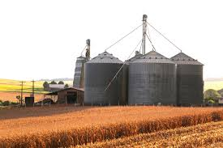
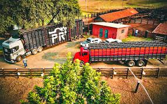
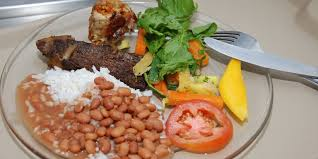

1. A Produção Rural dos alimentos 🚜
A produção rural é uma atividade fundamental para a economia e a alimentação das pessoas. Ela pode ser dividida em diferentes setores, como a agricultura, que envolve o cultivo de cereais, frutas, verduras e outros alimentos; a pecuária, que cuida da criação de animais como gado, porcos, aves e ovelhas; e também a agroindústria, que transforma esses produtos em itens que usamos no dia a dia, como queijos, carnes processadas, sucos e outros alimentos industrializados.

2. Colheita e o Armazenamento dos alimentos 🏭
A colheita é o momento em que os agricultores recolhem os frutos, grãos, frutas ou outros produtos que cultivaram. Ela acontece quando as plantas estão maduras e prontas para serem colhidas, o que garante que os alimentos tenham qualidade e sabor. Para isso, os agricultores usam ferramentas manuais, como foices e enxadas, ou máquinas específicas, como colheitadeiras, que ajudam a acelerar o processo e facilitar o trabalho. Depois da colheita, vem o armazenamento. Essa etapa é muito importante para preservar os produtos por mais tempo, evitando que eles estraguem ou sejam atacados por pragas. Os alimentos podem ser guardados em silos, armazéns, celeiros ou caixas de madeira, dependendo do tipo de produto. É fundamental manter as condições de temperatura, umidade e higiene adequadas para garantir que os alimentos permaneçam frescos e seguros para consumo.  O armazenamento dos alimentos do campo geralmente envolve técnicas que garantem a conservação da qualidade e a durabilidade dos produtos. Isso inclui o uso de silos, armazéns bem ventilados, caixas de armazenamento, além de técnicas de secagem e conservação, como a salga ou o uso de conservantes naturais. É importante manter os alimentos em locais limpos, secos e protegidos de pragas e umidade para que eles permaneçam bons por mais tempo. Se quiser, posso te passar dicas mais específicas dependendo do tipo de alimento que você está pensando em armazenar.
3. Como é o Transporte do campo para a cidade 🚛
O transporte do campo para a cidade é uma parte muito importante da cadeia de produção de alimentos. Depois que os agricultores colhem os produtos, eles precisam enviá-los para onde as pessoas moram e fazem compras. Para isso, usam diferentes meios de transporte, sendo o mais comum o caminhão, que leva os alimentos de forma rápida e eficiente. Além dos caminhões, em algumas regiões, os trens também são utilizados, especialmente quando há grandes quantidades de produtos para serem transportadas por longas distâncias. Em áreas próximas a rios ou lagos, barcos podem ser uma opção, ajudando a levar os alimentos por vias aquáticas. 
4. Distribuição Urbana do campo a cidade 📦
A distribuição urbana do campo à cidade refere-se ao processo de transformação e deslocamento de áreas rurais para áreas urbanas, ou seja, como as regiões do campo se conectam e se integram às áreas urbanas ao longo do tempo. Essa transição acontece por diversos motivos, como o crescimento populacional, a expansão das cidades, a busca por melhores oportunidades de trabalho e acesso a serviços, além do desenvolvimento de infraestrutura urbana.

5. Consumo dos alimentos do campo 🍎
Os alimentos do campo incluem uma grande variedade de frutas, verduras, legumes, grãos, raízes e outros produtos que são cultivados ou colhidos diretamente na natureza. Esses alimentos geralmente são mais frescos e saborosos, pois são colhidos no auge do seu amadurecimento, o que preserva melhor seus nutrientes e seu sabor natural. Além disso, eles costumam ser produzidos de forma mais sustentável, com menos uso de produtos químicos e técnicas que respeitam o meio ambiente. Consumir alimentos do campo também ajuda a preservar as tradições culturais e os saberes locais, valorizando as comunidades rurais e seus métodos de cultivo. Isso contribui para a manutenção da biodiversidade, já que muitas dessas culturas tradicionais ajudam a preservar variedades de plantas que poderiam desaparecer com o tempo. 